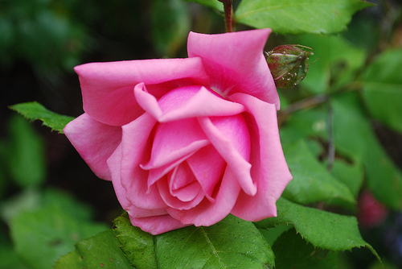

Ruusut
Ruusut ovat piikkisiä pensaita tai köynnöksiä.
Ruusun lehdet ovat yleensä 5–15 cm pitkät ja niissä on yleisimmin 5–9 lehdykkää.
Kukat ovat yksittäin tai kukinto on harvakukkainen huiskilo.
Kukkapohjus kehittyy marjamaiseksi kiulukaksi, jonka sisällä kehittyvät pähkylät.
Villiruusun kukassa on viisi terälehteä, jalostetuissa muodoissa niitä on kuitenkin paljon enemmän.
Luonnonmuotojen värit vaihtelevat valkoisesta vaaleanpunaiseen, myös keltaisia on.
Lehtien koko ja värisävyt vaihtelevat, samoin piikkien määrä ja koko.
Ruusun hedelmän nimi on ruusunmarja eli ruusun kiulukka, ja se sisältää paljon C-vitamiinia.
Tästä Ulapalle